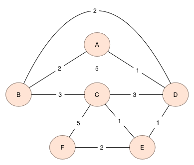

CMPT 306
Lab 11
Shortest Path
This lab will involve implementing Dijkstra's Algorithm for
solving the shortest path problem for a positive-weighted graph.
Shortest Path
This step involves designing an algorithm that solves the
shortest path problem using Dijkstra's Algorithm as presented in
class.
Let's work on with the Dijkstra
worksheet in class.
In particular, given the following weighted
graph:
- network1.txt
- network2.txt
output the shortest path from a designated starting vertex to all
other vertices in the graph.
The file network1.txt is
an undirected graph (not a directed graph as we discussed in class.)
This is in fact irrelevant as Dijkstra's Algorithm can be applied to
both directed as well as undirected graphs. This graph appears as

The shortest path from A to all other vertices is
Vertex
|
Shortest Distance
|
Parent Vertex
|
A
|
0
|
-
|
B
|
2
|
A
|
C
|
3
|
E
|
D
|
1
|
A
|
E
|
2
|
D
|
F
|
4
|
E
|
Please download this file as a start:
- lab11.py
- lab11.ipynb
Submission
Submit your filesdtoparent, vertex to the dropbox on Canvas. Be sure to
include each partner's name in a comment at the top of each
Python file.